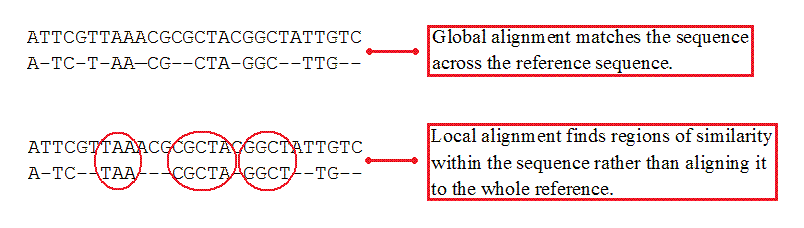

hlp.algo.seqalign.alignmentType
Alignment Type
Specify whether the alignment is local or global
The alignment of the sequences across the reference genome can be done locally or globally. A local alignment tries to find the best match in particular regions of the genome whereas a global alignment tries matching the entire sequence length to the reference genome. Global alignments are good for similarity and identity searches between the sequences. Local alignments are better suited for identifying conserved residues or domains.
